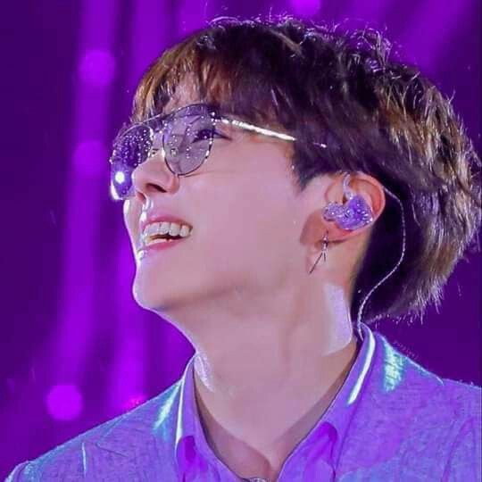

Jung Hoseok

Biografia resumida:
Jung Hoseok mais conhecido como J-Hope, é um rapper, dançarino, compositor e produtor musical sul-coreano, ele ficou popularmente conhecido por ser integrante do grupo BTS.
J-Hope nasceu em 18 de fevereiro de 1994, em Gwangju na Coreia do Sul, J-Hope trabalhava no cenário underground da sua cidade natal, GwangJu, como dançarino de street dance, fazendo parte de um grupo chamado Neuron, ganhando prêmios em algumas competições locais, adquirindo experiência.
Ele entrou na Big Hit depois que se mudou para Seul, em 2010, iniciando seus anos como trainee. Hobi relatou que entrou na empresa sem experiência no canto e no rap, e inicialmente J-hope iria assumir o posto de vocalista, mas ele tinha mais afinidade na dança então assumiu o posto de dançarino, também gostando de rap Hoseok virou um dos raapers do grupo, antes de entrar para o BTS ele já tinha ganhado muitos prêmios relacionados a dança.
J-Hope admite que, apesar de treinar a dança por horas e passar madrugadas ensaiando coreografias, não gosta de fazer exercícios ou ir a academia.